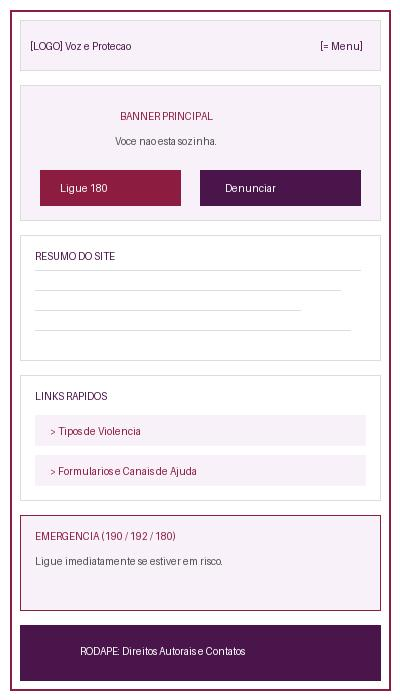
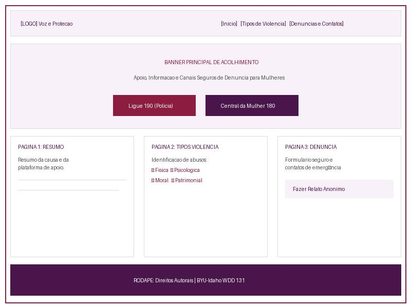

1. Nome do Site
Nome Escolhido: Elas Seguras
Razão da Escolha: O nome remete ao objetivo do site: ajudar milhares de mulheres a se sentirem seguras ao fazer denúncias de violência que estejam passando.
2. Finalidade do Site
O site Elas Seguras é um portal público de informação, conscientização e utilidade pública voltado ao combate da violência doméstica e de gênero. O projeto está estruturado em 3 páginas principais:
- Página 1 (Inicial): Apresenta um resumo do site, dados estatísticos, mensagem de acolhimento e acesso rápido a contatos de emergência.
- Página 2 (Tipos de Violência): Um guia educativo detalhando os 5 tipos de violência contra a mulher (física, psicológica, sexual, patrimonial e moral) conforme a Lei Maria da Penha, com orientações sobre como identificar cada uma.
- Página 3 (Denúncia e Contatos): Formulário seguro para envio de denúncias/relatos e diretório de contatos diretos com a Polícia Militar (190), SAMU (192) e Central de Atendimento à Mulher (180).
3. Cenários (Público-Alvo)
Cenário 1
"Estou sofrendo agressão verbal e controle financeiro constante em casa, mas não sei se isso se enquadra juridicamente como violência doméstica. Onde posso entender meus direitos de forma discreta?"
Resposta do site: A usuária acessa a Página 2 ("Tipos de Violência") para consultar os sinais de violência psicológica e patrimonial, compreendendo seus direitos e os passos para buscar ajuda.
Cenário 2
"Preciso fazer uma denúncia rápida ou encontrar o contato urgente da polícia/SAMU para ajudar uma vizinha em situação de risco imediato."
Resposta do site: A pessoa encontra botões de ligação rápida em destaque (190 / 180 / 192) no cabeçalho e pode preencher o formulário de denúncia na Página 3.
4. Esquema de Cores
O esquema de cores utiliza tons sóbrios e acolhedores associados ao movimento de proteção às mulheres, garantindo legibilidade e alto contraste de acessibilidade.
| Cor | Código Hex | Aplicação no Site |
|---|---|---|
| Roxo Profundo | #4A154B |
Cor principal do cabeçalho, títulos principais (H1, H2), rodapé e botões primários. |
| Vinho / Bordô | #8C1D40 |
Cor de acento para subtítulos (H3), bordas de destaque, estado de hover em links e botões de alerta. |
| Lilás Suave | #F8F1F9 |
Cor de fundo secundária para cards, caixas de diálogo e campos de formulário. |
| Grafite Escuro | #2B2B2B |
Cor padrão do texto do corpo da página para garantir alto contraste e leitura confortável. |
5. Tipografia
| Elemento | Família de Fontes Escolhida | Descrição de Uso |
|---|---|---|
| Títulos (H1, H2, H3) | 'Segoe UI', Roboto, sans-serif | Aplicada nos cabeçalhos e botões. |
| Corpo do Texto | Arial, 'Helvetica Neue', sans-serif | Aplicada aos parágrafos, listas e formulários, garantindo ótima leitura em dispositivos móveis e desktop. |
6. Wireframe da Página Inicial
Visualização Móvel (Mobile View)

Visualização Computador (Desktop View)
